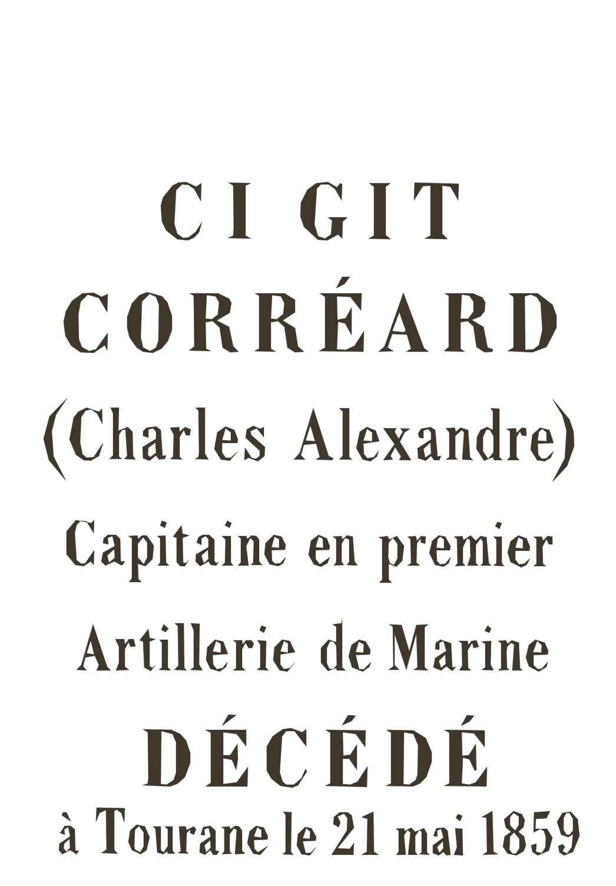

Cimetière franco-espagnol de Tiên Sa — Đà Nẵng
Un lieu de mémoire marqué par l’expédition franco-espagnole de 1858-1860, la résistance vietnamienne et une histoire funéraire qui se prolonge bien au-delà de cette période.
Aujourd’hui, les pierres et les épitaphes s’effacent peu à peu. À partir des recherches historiques, des archives et des observations de terrain, Mémoire vivante vous invite à explorer ce patrimoine, à retrouver les inscriptions et à découvrir les histoires que les monuments nous transmettent encore.
Le numérique ne remplace pas la conservation des lieux : il contribue à préserver et à transmettre les informations, tout en distinguant ce qui est établi de ce qui reste à découvrir.
Le cimetière franco-espagnol de Tiên Sa — Đà Nẵng
Un lieu de mémoire, une histoire à redécouvrir
Situé sur la péninsule de Tiên Sa, à Đà Nẵng, le cimetière militaire franco-espagnol témoigne d’un épisode majeur de l’histoire du Việt Nam. En septembre 1858, une expédition franco-espagnole débarque à Tourane, l’actuelle Đà Nẵng. L’occupation de la place se prolonge jusqu’en mars 1860. Confrontée à la résistance vietnamienne ainsi qu’à d’importantes difficultés logistiques et sanitaires, cette entreprise de conquête s’achève localement par un échec colonial.
Le cimetière conserve les traces de cette histoire, mais son passé ne se limite pas à l’expédition de 1858-1860. Les recherches historiques et les enquêtes de terrain de Sunny Le Galloudec documentent 33 tombes individuelles, un monument-ossuaire et une colonne pyramidale. Plusieurs sépultures concernent également des marins décédés après 1860. L’identification de certaines tombes reste incomplète, notamment parmi les sépultures espagnoles.
Un patrimoine façonné par le temps
Le site a connu plusieurs phases d’aménagement, de protection et d’entretien. Des premières opérations de protection en 1888 aux travaux des années 1890, puis à la réorganisation du cimetière et à son inauguration le 13 juillet 1898, son histoire est aussi celle d’un monument continuellement transformé. Les alertes sur la dégradation des sépultures, notamment celle de Victor Goloubew en 1921, témoignent de préoccupations anciennes pour sa conservation.
Les intempéries, le climat et le vieillissement des matériaux ont progressivement altéré certaines pierres et rendu plusieurs épitaphes plus difficiles à lire. Avec elles, ce sont des noms, des parcours et des fragments d’histoire qui risquent de disparaître de la mémoire collective.
Préserver et transmettre autrement
Le projet Mémoire vivante propose une approche complémentaire de la conservation matérielle : documenter, expliquer et transmettre l’histoire du cimetière grâce au numérique, sans attendre qu’une restauration physique puisse être engagée.
À travers les inscriptions, les photographies, les archives et les restitutions numériques, cette application vous invite à découvrir les monuments, à retrouver les traces du passé et à mieux comprendre le contexte dans lequel ils ont été érigés.
Chaque pierre raconte une partie de l’histoire. Certaines identifications restent incertaines et toutes les questions ne sont pas résolues. Le parcours distingue donc les faits documentés, les interprétations historiques et les éléments qui restent à confirmer.
Explorer ce lieu, c’est préserver ses traces et contribuer à transmettre une histoire complexe, dans le respect des personnes qui l’ont vécue et des mémoires qu’elle engage.
Se repérer sur le site
La position du cimetière est indicative. Les repères internes seront ajoutés après relevé.
Votre parcours de découverte
Repérez les éléments patrimoniaux, scannez leurs plaques et ouvrez leurs fiches historiques.
Les personnes citées sur la plaque
Les notices biographiques seront ajoutées après vérification des sources.
Dirigez la caméra vers la plaque de l’ossuaire pour afficher sa transcription et les ressources associées.
Se repérer sur le site
La position du cimetière est indicative. Les repères internes et leurs coordonnées seront ajoutés après relevé sur place.
Autorisez la géolocalisation pour afficher votre position et estimer votre distance au site.
Fond de carte OpenStreetMap
Emplacement indicatif du cimetière
16.12233, 108.22004La position du cimetière est indicative. Les repères internes seront ajoutés après relevé sur place.
Reconnaître automatiquement une plaque
Activez la caméra puis présentez la plaque commémorative de l’ossuaire, entière et plutôt de face. Lorsqu’elle est reconnue, sa transcription et les ressources associées s’affichent. La plaque n’apparaît pas à l’écran avant sa détection.
Vous souhaitez reconstituer une inscription ? Accédez à la page « Reconstituer ».
Présentez la plaque entière, plutôt de face, avec un éclairage régulier. La première préparation de la cible peut prendre un moment.
Visez la plaque de l’ossuaire
Présentez la plaque entière, plutôt de face, avec un éclairage régulier.

La plaque de l’ossuaire
Transcription provisoire à vérifier sur la plaque originale.
Pour approfondir
Photo cible du repère
Une initiative portée par l’AECV
L’AECV œuvre à la conservation, à la numérisation et à la valorisation des archives et de l’histoire du Centre Vietnam.
Pour approfondir
Notre méthode
Chaque repère est associé à une image cible, une transcription, une notice courte, des traductions et des liens documentaires.
Les personnes citées sur la plaque
La plaque de 1898 nomme plusieurs personnes et fonctions. Les notices biographiques et portraits seront ajoutés après recherche et vérification des sources.
Votre parcours de découverte
Retrouvez ici les plaques et inscriptions à explorer.